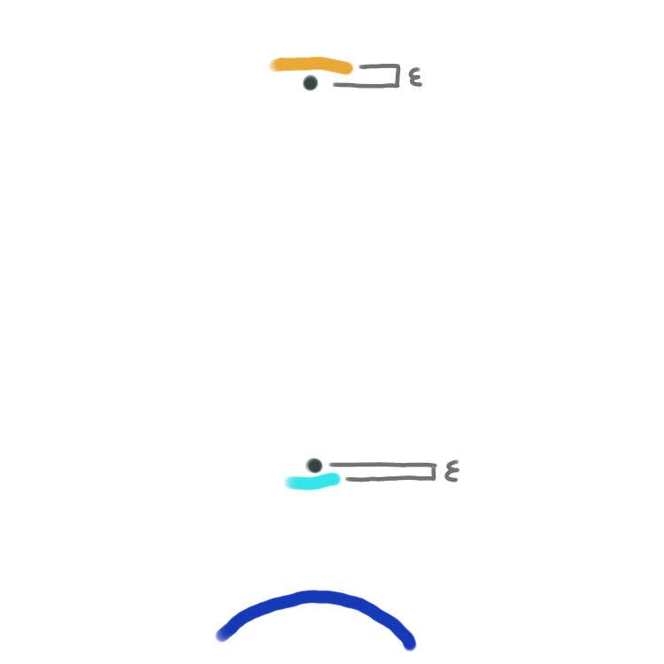
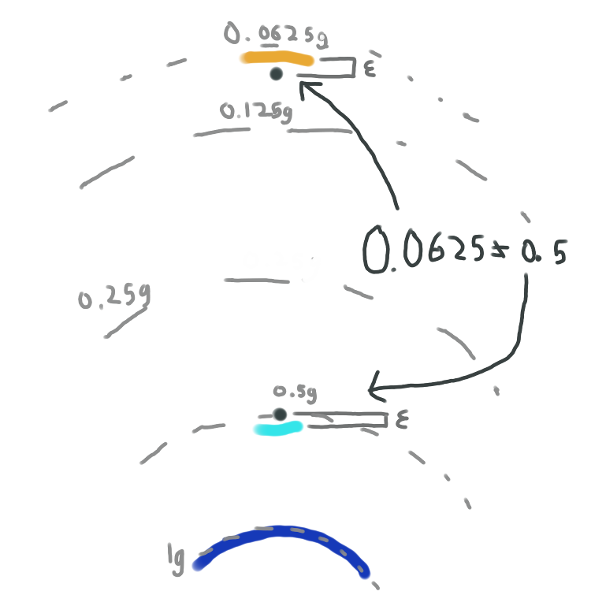

But why is the particle able to attain infinite energy? Usually, gravity is a conservative force: potential energy is the same no matter the path one takes to get from A to B. But consider two points, each ε away from a portal. Through the portal, they're only a tiny distance of 2ε away from one another, so they should feel the same force of gravity.

Newtonian gravity says the force F is proportional to 1/r2, where r is the distance from the point to Earth. Therefore, since the top point is farther from Earth, Newtonian physics says it experiences less gravity. Can we change how we define r to fix the problem?